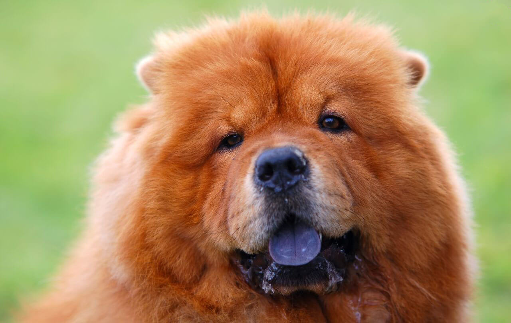

Чау-чау
- Продолжительность жизни: 12-15 лет
- Группа: Неспортивная
- Окрас шерсти: белый, серый, рыжевато-коричневый, голубоватый, черный, кремовый, светло-коричневый, ярко-рыжий
- Длина шерсти: длинная
- Линька: сильная
- Рост кобеля: 48-56 см
- Рост суки: 46-51 см
Чау-чау известен своей необычайно густой шерстью и синим язычком.
Особенности экстерьера чау-чау: довольно массивный череп; широкая круглая мордочка; вскинутые, маленькие ушки;
глубоко посаженные глаза, которые придают умное выражение его мордочке;
почти прямые задние лапы (это делает его походку такой неповторимой). Собака внешне выглядит крупной.
Ее вес колеблется от 20 до 35 кг.
Характер собаки на первый взгляд кажется абсолютно непонятным. Чау-чау не требуют к себе много внимания,
но при этом является семейным животным, которое безумно любит детей.
Всего за каких-то 60 секунд из радостного и веселого чау-чау может превратиться в совершенно упрямого.
Несмотря на это, чау-чау сможет спокойно завоевать любовь всех членов семьи.
Раз и навсегда влюбившись в чау-чау, многие хозяева заводят по две собаки и никогда уже не смогут отказаться от них. Эта порода – выбор определенной публики.
Особенный темперамент сформировался у чау-чау еще в те времена, когда в Китае и Монголии его использовали как рабочую силу, как источник мяса и меха. Долгое время к нему не относились как к своему домашнему питомцу. Но со временем преданность, хорошая служба и большая привязанность собаки сделали свое дело: теперь хозяин не мог убить своего чау-чау.
